Weba 2007
Le Week-End du Bout de l'An, un truc de fous, quoi. Mais bon an mal an, il se perpétue dans la bonne humeur !

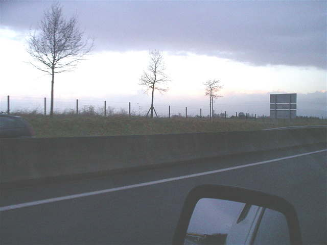
Faisait pas beau en partant de chez moi. Mais en approchant de Berck, on voyait une trouée au loin, Optimisme !

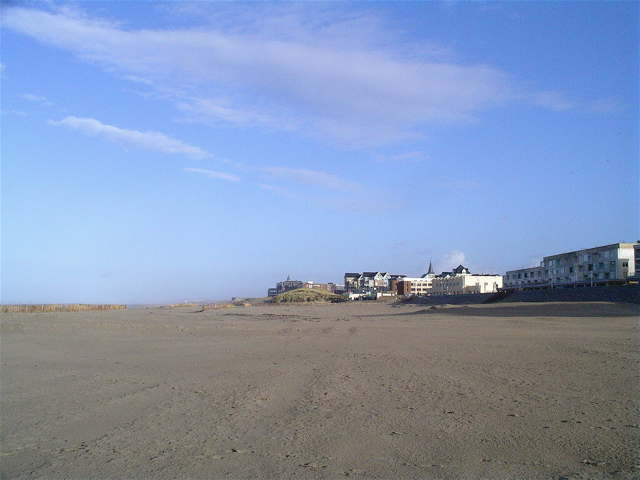
Et sur la plage, grand ciel bleu. Evidemment, il ne faisait guère au-dessus de 0° et le vent tournait autour de 40 km/h, ce qui n'était pas très favorable pour les cerfs-volants... ni pour les cervolistes !

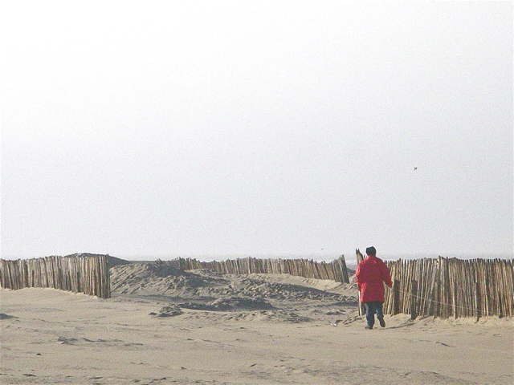
Mais la plage s'est quand même peuplée petit à petit. François était venu, bien protégé...

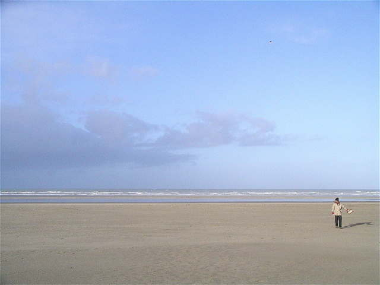
Emmanuel a sorti un cerf-volant chat, évidemment. Ses CVs sont petits mais costauds !

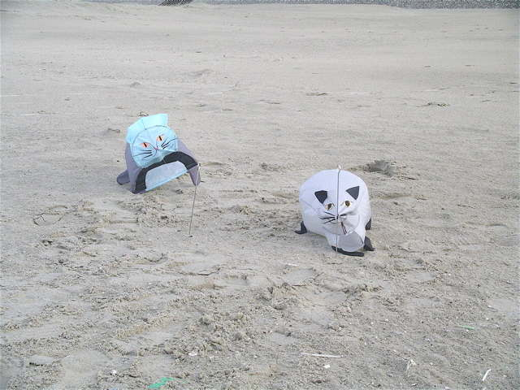
Au sol, il a aussi monté de nouveaux chats de jardin, solidement attachés ! Il y a encore de la mise au point à faire, le sable rentre par l'avant et s'entasse tout d'un côté !

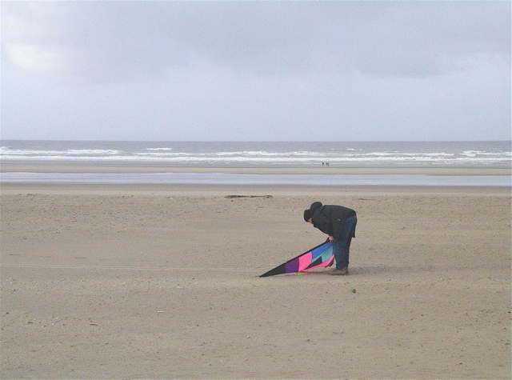
Bernard est en train de re-mettre au point le delta pilotable un peu spécial de ses débuts en traction...

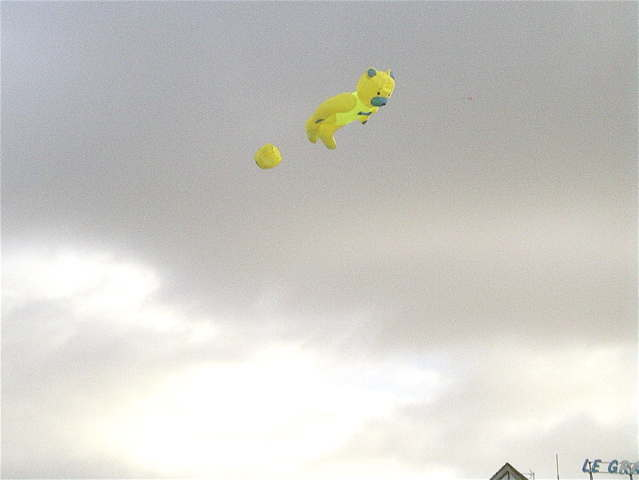
Mais Patrick Guilbert (principal organisateur de l'évènement) est content : son nounours vole bien stable, sans porteur du tout. Bon, de temps en temps il fera un petit planté de tête, surtout demain...

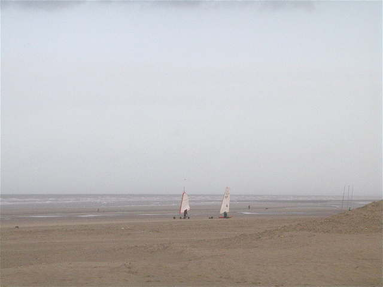
Sur la plage, les chars à voile se préparent. Ceux de l'Ecole ont une toute petite voile mais feront quand même du deux-roues facilement !

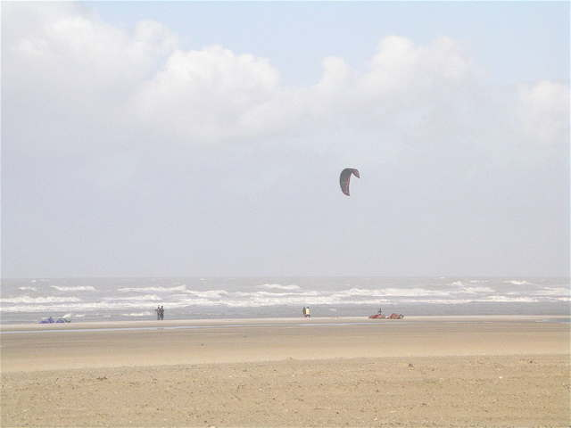
Il y a aussi des tractionneurs et des chars à cerf-volant, qui débarouleront sur la plage à grande vitesse devant les vagues blanches d'écume.

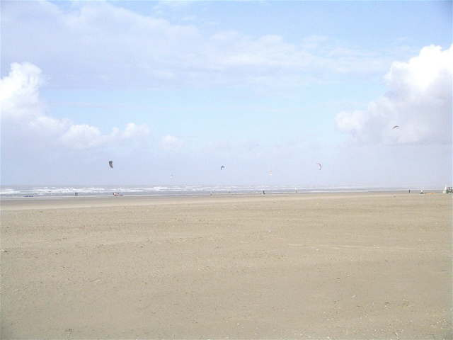
Mais ils seront quand même pas mal nombreux à profiter du beau temps et à se frotter aux 40 km/h de vent !

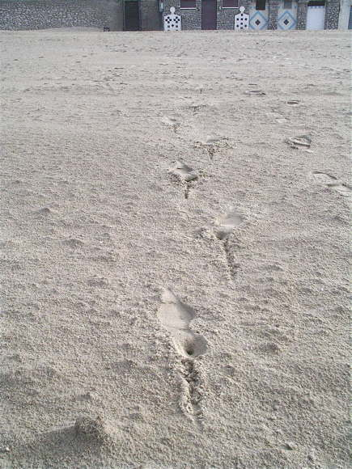
Nous avons quand même des spectateurs, une admiratrice est passée sur la plage, pas très bien équipée pour ce terrain, il me semble...

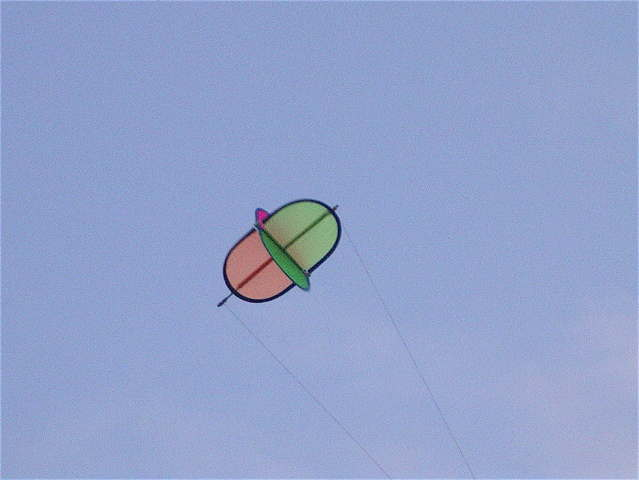
Geneviève Duba a mis en l'air le cerf-volant rotatif qui s'en donne à coeur-joie...

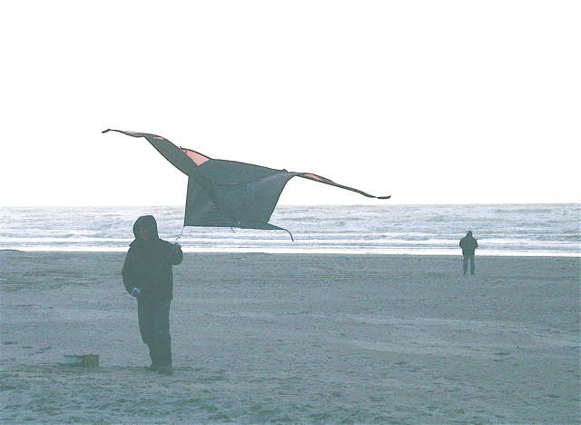
Bernard est revenu au monofil, un dérivé de delta bien connu dans le Nord...

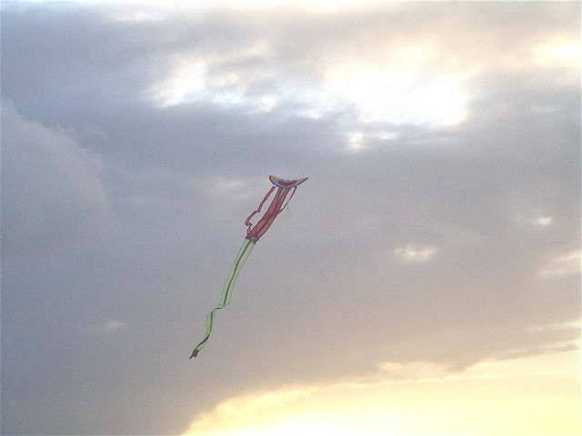
Emmanuel n'arrête pas, il a monté son bonhomme stylisé aux longs bras et jambes. Bien sûr, ils stabilisent, mais s'agitent aussi beaucoup dans cette météo pour hommes !

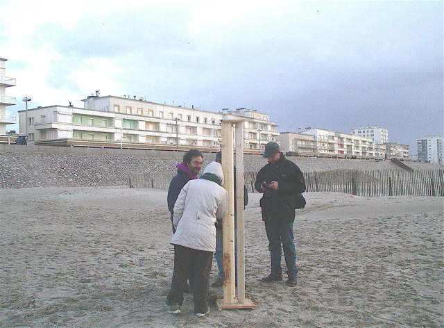
Didier a sorti le prototype de sa nouvelle harpe vertical, qui sonne quel que soit le vent. Les lattes verticales sont profilées comme des ailes d'avion pour renforcer le courant d'air...

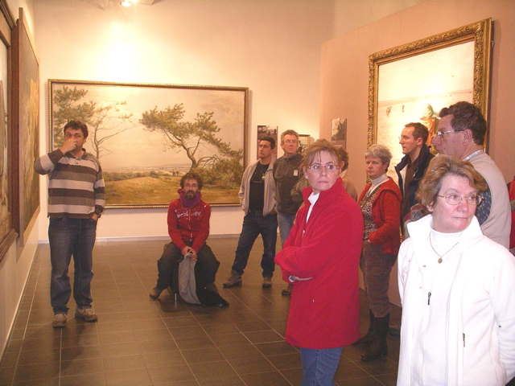
André nous a conviés à l'exposition Francis Tattegrain (1852 - 1915) au Musée de Berck. Il nous la fait visiter avec une compétence qui n'exclut pas les sourires. Tattegrain avait fait construire sur la plage un atelier doté d'un mur ouvrable pour peindre ses grandes toiles (5 m, je crois) à la lumière locale ! Bien que sa cote ne soit pas très élevée à la bourse des toiles, je trouve très belles celles de Tattegrain.

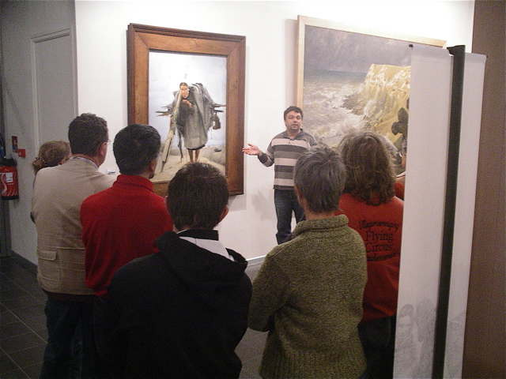
La Ramasseuse d'Epaves attire particulièrement l'attention. André parle d'une allégorie du Christ en croix... Cette toile est une reproduction... mais peinte à l'époque par Tattegrain lui-même, d'une toile emblématique du Musée de Boulogne (à moins que ce ne soit le contraire, qui sait ?).

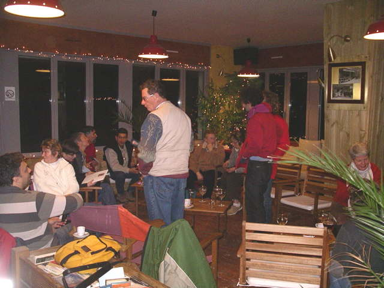
Après le Musée, tout le monde se retrouve au Bar de la Plage. Il y a le temps, la nuit ne tombe jamais plus tôt qu'en cette saison... Dans une salle réservée, Patrick et Didier nous offrent l'apéritif, merci à eux. Grandes discussions sur la journée, évidemment.

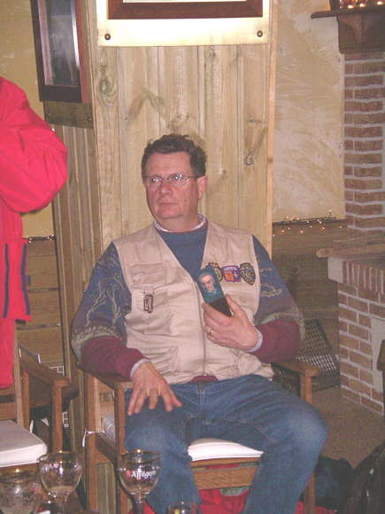
François préside, bien sûr, sur son trône un peu simpliste quand même !

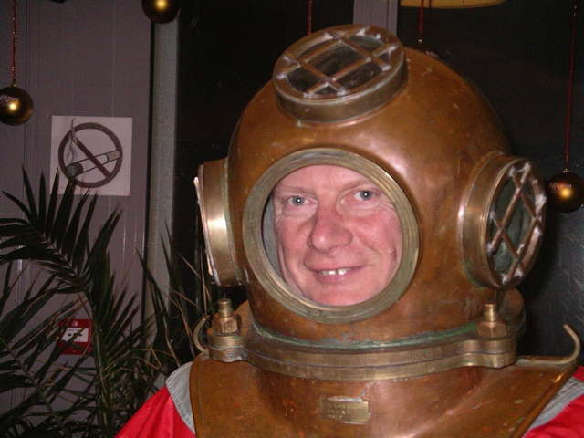
Mais il reprend son naturel pour un essayage un peu particulier ! Hors de l'eau, le machin fait quand même 15 kg !

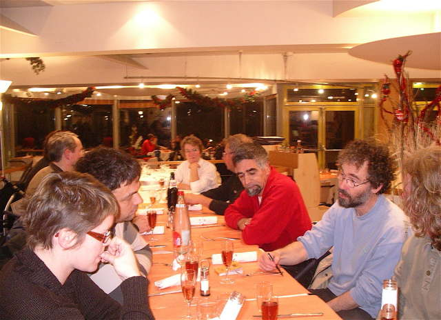
Ensuite, dîner au restaurant de l'Agora qui donne sur la plage. Didier, bien sûr, commence à dessiner sur la nappe. En ce moment, ce sont des projets pour un ensemble permanent d'aéro-instruments, je ne sais plus où, désolé...

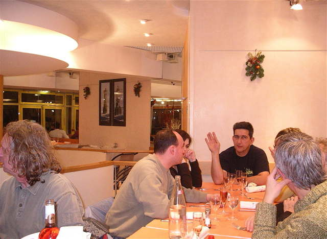
Sur la deuxième branche du T, c'est Bernard qui préside...

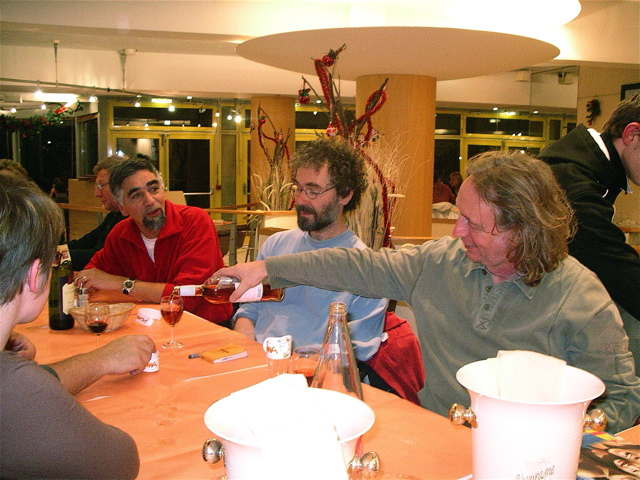
Les teints sont un peu rouges, c'est la lumière, la réflexion de la nappe, mais aussi le froid, le vent, puis la chaleur du restaurant qui active la circulation !

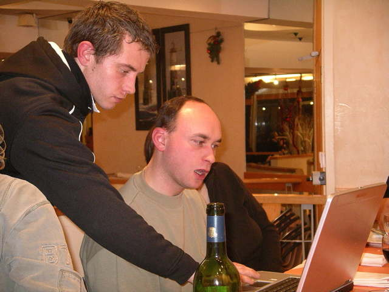
Jeremy se promène avec son ordinateur pour montrer les photos de son camion après son accident ! Il s'en est (miraculeusement quand on voit les photos) tiré indemne ! Seb en reste baba !

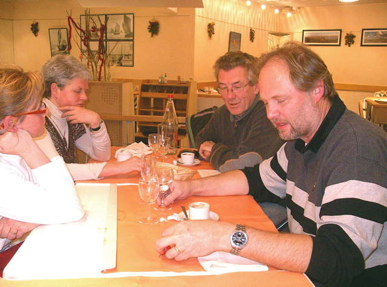
Sur l'autre bout du T, c'est Jos et ses compatriotes qui discutent entre eux...

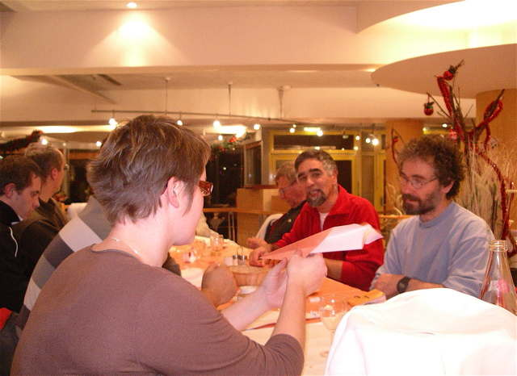
Bien sûr, au dessert, les amusements habituels reprennent le dessus, mais calmement...

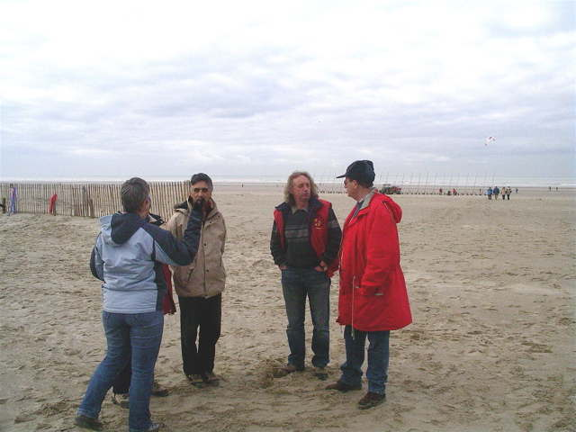
Après une bonne nuit dans mon camion (même pas eu froid !),on se retrouve dimanche matin sur la plage, mais les participants partiront progressivement. Le vent est redevenu normal, le temps n'est pas mal, les anoraks s'ouvrent.

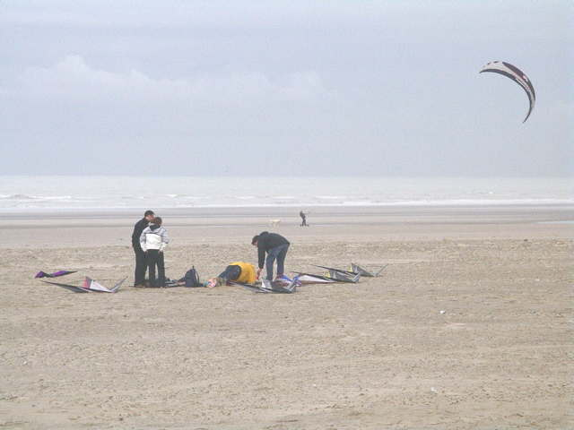
Un peu plus loin, un team s'entraînera même un bon moment, avec des CVs ventilés, bien sûr...

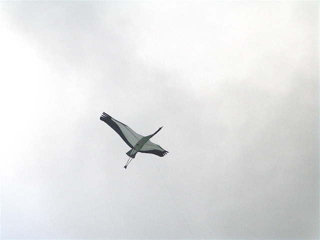
Avec ce vent plus limité, je réussirai après plusieurs recherches et modifications à régler ma grue qui tirait et louvoyait auparavant dans tous les sens, j'espère que ça se maintiendra dans un vent plus fort...

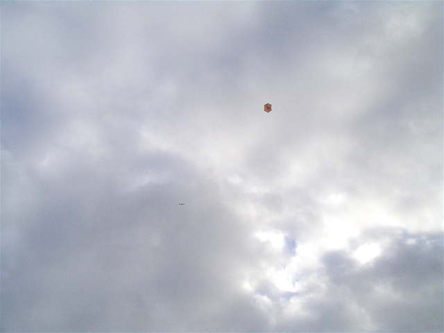
Avec la stabilité obtenue, et dans ce vent de mer très stable, je lâche même tout mon fil, 240 m sans problème, c'est la première fois, avant c'était plutôt 20 m, et pas longtemps !
En conclusion, une conviviale un peu spéciale, où on peut se retrouver dans une ambiance particulière alors qu'on ne s'est pas vus depuis l'automne. Mais il faut de la volonté ! Rendez-vous l'année prochaine, les courageux, on ne sait-z-où (ça change tous les ans) !